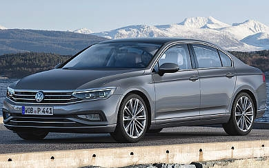

¡Hola, amantes de los autos! Somos Erik y Rubén, los creadores detrás de esta web dedicada a hablar sobre coches. Hoy nos lanzamos de cabeza al mundo del Volkswagen Passat, un coche que nos tiene enamorados.
Si te gusta todo lo que tiene que ver con los motores, estás en el lugar correcto. Vamos a destripar este modelo desde el diseño hasta el rendimiento.
Así que, agarra tu bebida favorita, ponte cómodo y únete a nosotros en este paseo donde descubriremos muchas caracteristicas y curiosidades sobre el Volkswagen Passat.¡Arranca el motor y vámonos!
|  |